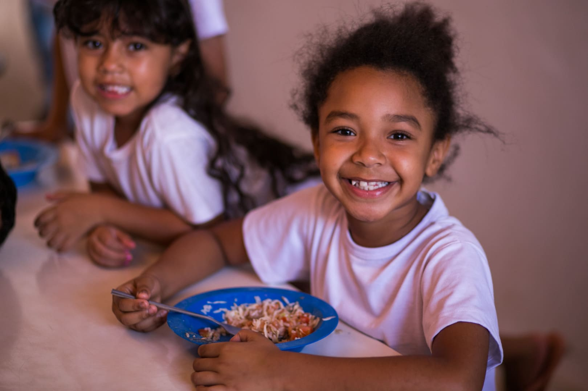

Descrição do primeiro slide.
Descrição do segundo slide.

Descrição do terceiro slide.
ONGs, ou Organizações Não Governamentais, são entidades sem fins lucrativos que atuam em diversas áreas sociais, como saúde, educação, meio ambiente e direitos humanos. Elas buscam soluções para problemas da sociedade, apoiando comunidades e promovendo mudanças positivas sem vínculo direto com o governo. Financiadas por doações e voluntários, as ONGs desempenham um papel importante na construção de uma sociedade mais justa e sustentável.
Além de oferecer apoio direto às comunidades, as ONGs também promovem conscientização e engajamento social, incentivando a população a participar ativamente das causas que defendem. Elas atuam como pontes entre os cidadãos e os recursos necessários para enfrentar desafios sociais, ambientais e econômicos. Ao envolver voluntários e manter parcerias com empresas e outras instituições, as ONGs conseguem ampliar seu impacto, ajudando a transformar a realidade de milhares de pessoas ao redor do mundo.
Muitas ONGs também exercem um papel fiscalizador, acompanhando políticas públicas e cobrando ações mais efetivas dos governos. Assim, elas contribuem para a transparência e a responsabilidade social, defendendo os direitos das populações mais vulneráveis e buscando um desenvolvimento mais equilibrado e inclusivo.